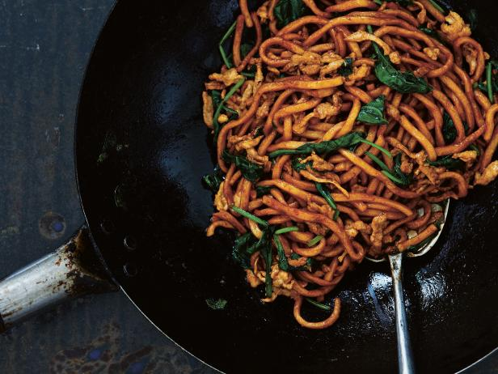

Shangai Style Fried Noodles

Flavorful and authentic Shanghai noodles with fried chicken and vegetables. You can substitute for any type of meat; even tofu! Mix and match with your favorite vegetables
Ingredients
- 1 tablespoon vegetable oil
- 100 grams chicken breast, sliced into small narrow strips
- 1 tablespoon Chinese cooking wine
- 300 grams Shanghai chao mian noodles, soaked in warm water for 5 minutes and drained
- 3 brown mushrooms, sliced
- ½ tablespoon sesame oil
- 1 tablespoon soy sauce
- ½ tablespoon dark soy sauce
- 1 teaspoon brown sugar
- 1 teaspoon white pepper powder
- 1 large bunch bok choy
Steps
- Heat oil in large pan over high heat
- Add chicken and cook for 2-3 minutes, until it changes colour.
- Then, add cooking wine and turn the heat down to medium-low
- Break the soaked noodles apart with your hands and add them to the pan, along with mushrooms and sesame oil and stir-fry together for 3 minutes, until mushroom is soft and translucent.
- Add soy sauce, dark soy sauce, brown sugar, and white pepper.
- Stir for 1 minute
- Add bok choy and turn the heat up to medium.
- Cook until bok choy gets medium soft, about 1-2 minutes
- Do not overcook as you want the bok choy to still be firm and not soggy
- If the sauce is getting too dry, add a tablespoon of water.
- Serve hot.